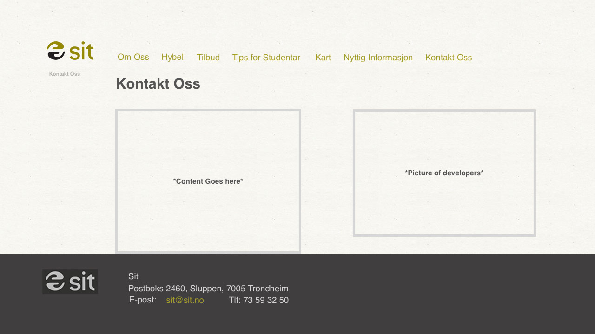

Nicholas Jaunsen, Thomas Almestad, Simon Nordvold, Adrian Hofseth and Erik Krüger
IT2805 05/10/2016
Our client
Our client, SIT, is an organization that wants to contribute to students well-being. Their aim is to collaborate with students to develop welfare services they may need. On this website we help SIT with their housing services for the students. We want to develop a user-friendly page where the students can look at the housing possibilities and find out more about the opportunities and options they have when it comes to housing.
Sites purpose and goal
The purpose of this website is to create a user-friendly page for students that are searching for housing, and to show students the variety of housing in different parts of Trondheim. We will achieve this goal by providing helpful and easily-accessible information about SIT, a map of Trondheim that shows the locations of our housings and by giving guidance to students that are searching for housing and provide information about the regulations for our housing.
Intented audience and typical user
The intented audience for this website are students studying in Trondheim who are looking for a place to live, prefirrably close to their university campus. These students will for the most part be Norwegian students, but the site will also be visited by exchange students looking for housing.
Navigation Structure
For our website we have chosen to have ten different pages to display all the information required by our client. The list of pages include; frontpage, about us, tips for students, rental house list with three pages for rental places, contact us, SiT services and a Terms of Services site. For our website we have chosen a clique navigation structure as shown in Figure 1. From the homepage it is possible to accsess all of the webpages included in the website and vice versa, which means it is possible to access all the pages from any given page in our website.
The reason we chose a clique structure is because it is easy to use and practical. All the pages are available at all times for maxium accessibility. The navigation structure also fits well with the simplistic design of the website. The structure also makes sure that the user won't miss any pages since they are all available from the navigation bar which is displayed at the top of all the pages.
Figure 1. Clique navigation structure
Page Layout and Appearance
Figure 2. Mockup for Generic Features
The specific styling for the website that will apply to all pages can be found below:
Font: “Helvetica” 18pt for titles, 15 pt for body, 11 pt for “hjem”.
Color Scheme
Text: #737373
Titles: #958f1b
Links: #958f1b
Hover: #555555
Footer background: #303030
Footer text: #cccccc
“Hjem”: #b3b2ad
Body width: 960px;
Border width: min 50px;
Text align: left;
Links: The main title “SiT” will always redirect us to the front page. The other links within the navbar will direct the users to the different HTML documents. The email address link in the footer will just act as a dummy.
Navbar position and its appearance: The navbar will be included at the top of the page. When the mouse hovers over the tabs within the menu bar, the background of the link will turn to a darker shade of its tab. Hence, the background colors will be RGB (149, 143, 27)
Footer: The footer will contain basic contact information, such as telephone, email and mailbox.
Background Images: The background image was provided by SiT, and has a papery white look.
Logo: Our logo will be located on the upper left corner of the page next to the navbar. The logo is the official SiT logo.
The icon tab: The icon tab will be the official SiT logo in grey.
“Hjem”: Shows the user which page he is on, the title will change from page to page.
Content
There will be ten seperate pages as follows:
1. Home page
This page will be the first page visible when accessing our website. The goal of this page is to show the students that SiT works for the students and wants to help them to find housing in Trondheim.
The page will have a floating image on the right side, showing smiling students, with the size 400x300px. On the left, there will be a short text explaining the goal of the site ( to create a easier-to-use website for SiT ). The page will look professionally, only showing small segments of text and a simple picture.
Figure 3. Mockup for homepage.html2. About us
This page will be accessable by clicking the “Om Oss”-tab on the navbar. The page will contain information about SiT as an organization.
This page will foulfil the goal of informing students about our history, our goals and how we interact with students in order to support them with their studies. The page will contain several text elements such as a picture that floats on the screen with the size 400x300 px. The body will be parted in different div elements for each different heading and text-block regarding the heading.
Figure 4. Mockup for about.html3. Housing
The goal of this page is to show the students a variety of different housings and shortly state some facts about each of them.
The page will have different div elements with a heading and a box element. The box will contain basic information about our housings such as location, price and so on. The heading will be a clickable link, that forwards the user to the corresponding web page of the housing.
There will be small icons as pictures withing the boxes with a size of 150x150x showing the housing.
Figure 5. Mockup for Hyblar.html4. Individual housing pages
The goal of these webpages is to show the students examples of some of our housings in Trondheim. They will contain information about the housing and also provide pictures.
We will have 3 webpages of this kind, showcasing 3 different housings in Trondheim. In addition to the informational text and the pictures, we will include a javascript picture gallery where the users can scroll through the pictures we provide.
The Mockup a) shows the webpages standard look. The picture will be 400x300 px.
The Mockup b) shows the website showcasing the picture gallery. Here the pictures will be showcased 600x400 px and will have some informational text to tell the students what they are looking at. The picture will be centered.
Figure 6. Mockup for Hybel_eksempel1.html5. Services
"Tilbud" or Services webage will show the new students what SIT is offering students beside the housing. In here we’ll have information about the training facilities, washing facilities and so on.
The text and information is the main thing about the page and shall not be overwhelming for the new students, but work as a trigger for them to use some of the offers. We’ll use pictures to illustrate the offers, and the pictures will be 250 px length and 250 px height.
Figure 7. Mockup for Tilbud.html6. Tips for students
Tips for students webpage will provide the students some useful information about things when they come to Trondheim as students.
It will have some information about how to search for loan on Lånekassen, about transport in Trondheim and other useful stuff. The logo part of the webpage will have the logos to the firms we are referring to, and the content will be short but informative. The logo image should be 250x250 px.
Figure 8. Mockup for Tips.html7. Map
The goal of this webpage is to let the students look at an interactive map of Trondheim, where they can locate the schools and housings, as well as the city centre.
The Map will fill most of the page. It will be imported from Google maps and altered by us. The map will have a zoom function.
Figure 9. Mockup for Kart.html8. Frequently asked questions
This goal of this page is to answer frequently asked questions; such as moving in, moving out, contracts and so on.
The page will be well structured with headings that show frequently asked questions, and a small textblock answering that question. This page will be very simple and the only purpose is to answer the stundents questions. Therefore we decided to not include pictures, so the main focus stays on the text.
Figure 10. Mockup for Nyttig_info.html9. Contact us
The Goal of this website is to provide our contact details for students, so they know how, when and where to contact us.
"Kontakt oss" webpage will contain simple information about how to get in touch with us by email, telephone and mailbox. The picture should be of the developers, then the students will have some faces to refer to. The picture will be 400x300 px

Figure 11. Mockup for Kontakt_Oss.html
Minimum Requirements
We plan to do the minimum requirements in the following way:
Adrian, Erik and Simon will be responsible for the following javascript applications:
A function that will display all the images for each housing, through arrays or objects. The images will be displayed in a slideshow where the user can cycle through each image. When an image is clicked on, it will resize to full size and the background becomes darker so the image is in focus. If the user presses escape button, or clicks outside the image, the image resizes to default size inside the image slide-shows. The user can also click div arrows inside the full-sized image to go to the next or the previous image.
An application that stores the example housings in objects, which are structured by a housing-class. The object includes:
Name
Adress
Student Residence
Content
Price
Thomas and Nicholas will be responsible for the following javascript applications:
A function that will display a menu when the user mouse-overs the hybel menu-header. The menu will contain different locations on where SIT are renting apartments. When the user only clicks the hybel header, it will redirect to /Hybel.html
A function that stores and tries to get information to local storage/JSON when the page loads. The information will include the user’s favorites.
The favorite will be stored as an object in JSON/local storage.
The user can add a comment to the marked favorite.
The favorite will also include the date when it was marked as favorite
The user can also remove favorites.
The user can look at favorites in the menu.
Plan
List of files and folders:
Index.html
Sit_logo.gif(Bruke eksisterende)
About.html
Nyttig_info.html
Tips.html
Kontakt.html
Tilbud.html
Hybel.html
Bilder for hybler
Kart.html
Datapunkter til kartet
Scripts
RollOverMenu.js
Gallery.js
Storage.js
Objects.js
Styling.css
Work Division and Deadlines
Filename
Description
In charge
Deadline
Index.html
The Homepage
Adrian
16.10.16
About.html
The about page, general information about SiT
Adrian
16.10.16
Nyttig_info.html
Useful information for new students about SiT housings etc
Adrian
16.10.16
Tips.html
Useful information for new students about general things, loans etc
Erik
16.10.16
Kontakt.html
Page containing the contact information of the SiT facilities and security
Erik
16.10.16
Tilbud.html
Page containing information about the training facilities and other offers from SiT
Erik
16.10.16
Hybel.html
The page showing all available apartments for rent
Simon
16.10.16
Kart.html
A map containing data point with the locations for the different apartments
Simon
16.10.16
Gallery.js
A picture viewing script. Has a small version with next and last picture and a bigger version for full-size images
Nicholas
20.10.16
Objects.js
The script that will show and sort the different apartments in hybel.html
Thomas
20.10.16
rollOvermenu.js
Will show a rollover menu for selecting the different top menus.
Nicholas
16.10.16
Storage.js
Give the user an option to save favorite apartment and add a comment
Thomas
23.10.16
Styling.css
The CSS file containing all styling for the website.